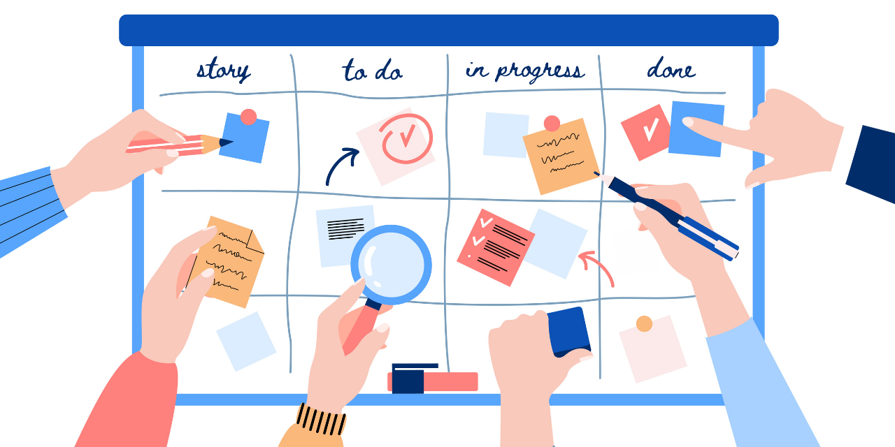

What is Kanban?
A kanban board is a visual way to manage tasks and workflows, which utilizes a physical or a digital board with columns and cards. The kanban cards represent tasks, and the columns organize those tasks by their progress or current stage in development.
Kanban—which comes from the Japanese word for “sign” or “Visual Board”—was developed by Toyota in the 1940s. It was originally a task management system to execute lean manufacturing. It was designed to improve the Toyota production system efficiency by limiting supplies and resources to what was needed for the immediate work items. Today, kanban boards are used in nearly every industry, most notably in software development.
Benefits of using Kanban
- Helps to visualise your project workflow
- Work is divided into smaller and more manageable tasks
- Collects all relevant information needed for a task
- Allows for focused and more efficient work
Elements of a Kanban Board
- Cards: Kanban cards live on the kanban board, and each one represents an individual task, also referred to as work items. Each kanban card is filled with information related to that task, such as its name and a short description.
- Columns(or Lists): Columns reside on the board and are a way to break up the different stages in the project workflow. Kanban cards are organized under the column headings and are moved to the next column to the right to indicate where in the production cycle or workflow they are.
Putting it all together
Let's put what we've learnt until now into practice. The simplest possible kanban board will usually have 3 columns: To Do, Doing and Done.
Something like this:
 Now, remember that each card represents a task on the board. As progress is made on a card, it moves through the columns "To Do", "Doing" and finally
reaches "Done" which marks the completion of that task. At this point you can delete or archive it.
Now, remember that each card represents a task on the board. As progress is made on a card, it moves through the columns "To Do", "Doing" and finally
reaches "Done" which marks the completion of that task. At this point you can delete or archive it.
That was a lot of information! But it should be enough to get you started on creating and organizing your very own kanban boards. So head over to MiniKan and get started!
Reference: The ultimate guide to Kanban Methodology.